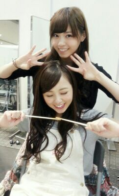
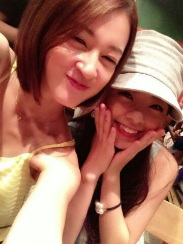

| 2014/07 21 Mon | 『ん〜ななせ○』 と 『ん〜ろてぃこ○』 ..*.♪うん |
皆さんおはようございます. お疲れ様です !!
まに or ろってぃ−です\(*´ω｀*)/
土曜日は、横浜にて握手会でした.!!
ペアは仲良し ななせ○〜
 ん〜ろてぃこ○。わら
ん〜ろてぃこ○。わら

ななせ大好き〜.♪.♪
アンダーになったらななせと絡む時間少なって、正直 少し寂しかったりもする (;_・)
かれこれ ななせ,まひろのペアは４回目くらい..*
握手会きてくださった, Rotty夢の皆さん
ななせ推しの皆さん,
乃木坂推しの皆さん, ありがと〜う
そして、握手会の休憩時間の合間に
ワンフレーズの『のど自慢大会』を開催しました !!!
そして、私は 歐陽菲菲さんの〜ラヴ・イズ・オーヴァー〜を歌わせてもらいました.♪.♪
どうでしたかね？？
って言っても いつものステージで歌ったわけでもなく、
自分の方にスピーカーがなくて
自分の声と音源が聴こえなくて、リズムとるので必死でしたけど、、


でも、楽しかったです !
場所,環境 関係なく歌えるだけで幸せです..*
聴いてくださった皆さん、ありがとう！
( 渋かったやろ？わら )
絢香さんや福原美穂さんの曲を歌おうと思ってたんですけど、カラオケがなかったみたいで、
急遽思い付いた曲が〜ラヴ・イズ・オーヴァー〜 でした 笑
ラヴ・イズ・オーヴァー大好きなんです\*^^*/
はいっっ ))))
せっちゃんと二人で会ってきたよ〜.♪
久しぶりに せっちゃんとの時間つくれた..*
幸せ。
せっちゃんとは 永遠の仲です。
晩御飯は うどん !!
麺 1,5倍 増加してもらいました.* わら
おいちーー

幸せそうな顔してる\☆/

では。のし。 まに or ろってぃ−
コメント(203)
2014/07/21 08:48